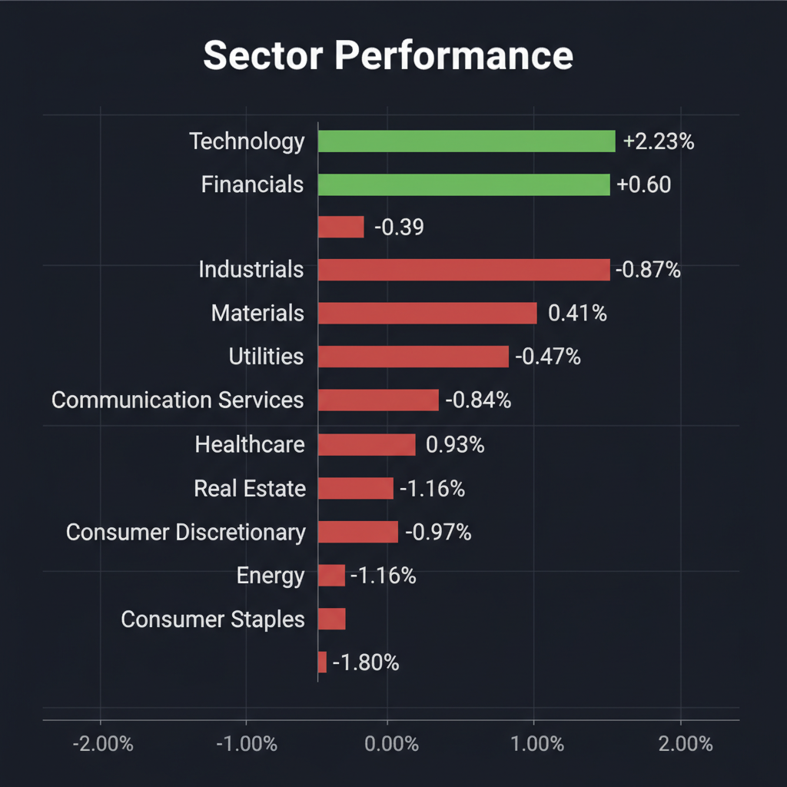
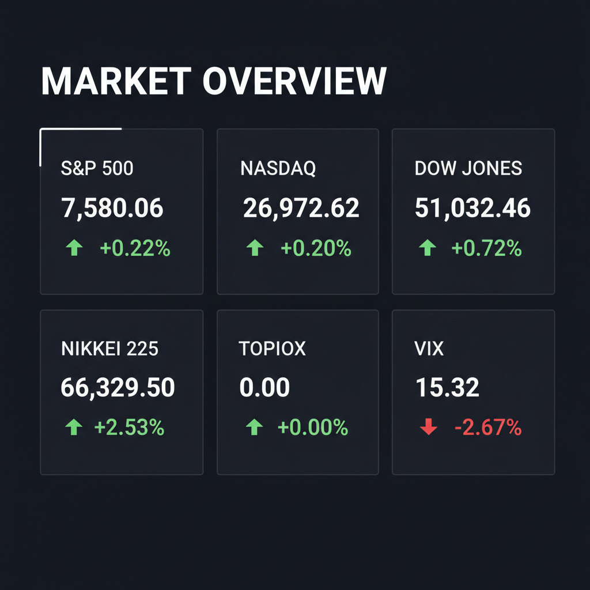

投資チームミーティングの議長として、各専門エージェントの分析と最新のWeb調査結果を統合した、投資家向けの最終レポートをお届けします。
各エージェントがWeb調査結果を踏まえて独立に10段階評価した結果です。平均7以上=強気、4〜6.9=中立、4未満=弱気。
| 銘柄 | ファンダメンタルズアナリスト | テンバガーハンター | マクロエコノミスト | テクニカルストラテジスト | リスクマネージャー | 平均 | 判定 |
| FCPT | 8 不動産ポートフォリオ強化、インフレ耐性◎ | 5 賃料回収率維持、M&Aでリスク分散、ディフェンシブ需要 | 7 動物病院買収でポートフォリオ強化、REITとして堅調 | 7 動物病院買収でポートフォリオ強化、インフレ耐性あり | 7 ポートフォリオ多様化、ディフェンシブ性◎ |
6.8 | 中立 |
| 5253 | 7 IP強み、新作ゲーム期待、短期調整は買い場 | 5 IPのグローバル化進展、株価調整は絶好の買い場 | 8 IP事業のグローバル展開加速、調整局面は買い場 | 7 IP事業堅調、目先調整もIPの価値は健在 | 3 利益急減、グロース株としてリスク大 |
6 | 中立 |
| 6787 | 7 AI・車載需要で業績好調、高PERは懸念 | 5 AIサーバー需要で業績爆進、急騰後も割安感あり | 7 AI・車載需要で業績急伸、割高感あるが成長性評価 | 7 AI・車載需要で好業績、株価は高値圏も成長性期待 | 2 株価急騰、割高感強く警戒 |
5.6 | 中立 |
| 6584 | 4 財務懸念あり、V字回復予想は楽観的 | 5 財務リスク露呈、V字回復シナリオは不透明 | 3 財務不安と内需回復遅延で警戒 | 3 財務懸念と単体赤字、回復力に疑問 | 1 財務不安、単体赤字で売却推奨 |
3.2 | 弱気 |
| RDW | 1 非公開化のため投資対象外 | 5 非公開化済のため投資不可、リスク管理上除外 | 1 非公開化済で投資対象外、評価不可 | 1 非公開化のため投資対象外 | 1 非公開化済、投資対象外 |
1.8 | 弱気 |
エージェントが推奨した中小型株について、Google検索で最新情報を調査した結果です。
銘柄コード6787のメイコー（Meiko Electronics Co., Ltd.）に関する投資判断に必要な最新情報は以下の通りです。
2026年5月29日時点の時価総額は約1兆346億円から1兆641億円規模となっています。業界ではプリント配線板製造大手の一つとして位置づけられ、AIサーバー向けの高付加価値PCBサプライヤーとして、NVIDIAの次世代AIラックのバリューチェーン分析でイビデンなどと並び名が挙がっています。また、衛星通信分野も新たな成長の柱として注力しています。
* 売上高: 2,405億7400万円（前期比16.3％増） * 営業利益: 245億7200万円（前期比28.8％増） * 経常利益: 264億8800万円（前期比41.2％増） * 純利益: 197億8200万円（前期比32.5％増）
この好業績は、車載向けや情報通信向け基板の需要拡大、および生産性向上が牽引しました。 また、2027年3月期の連結経常利益は前期比32.1％増の350億円と、3期連続で過去最高益を更新する見通しです。今期の年間配当は前期比45円増の160円に増配する方針です。
* 2026年5月13日: 2026年3月期連結決算を発表。過去最高益を更新し、2027年3月期も増益見通しと増配方針を公表しました。 * 2026年5月18日: FCLコンポーネント株式会社の複合事業譲受の取得価額に関する開示事項の経過報告がありました。 * 2026年5月15日: 前日に動いた銘柄として、メイコーが材料視されたことが報じられています。 * 2026年5月11日: 三井住友トラスト・アセットマネジメント株式会社がメイコーの大量保有報告書を提出し、保有割合が4.1%（-1.05%）となったことが報告されています。
* 市場競争と需要変動: 電子回路基板市場は競争が激しく、特に車載向けが売上の約4割を占める中で頭打ち感が指摘されています。新たな成長の柱とする衛星通信やAI・データセンター向け分野での計画通りの成長が達成できない場合、業績に影響を与える可能性があります。 * 財務状況: 2026年5月29日時点の有利子負債倍率は89.46%とやや高めですが、自己資本比率は40.6%と健全な水準を維持しています。 * 為替変動・原材料価格変動: グローバルに事業展開しているため、為替レートの変動や主要原材料（銅箔、ガラスクロスなど）の価格変動が業績に影響を及ぼす可能性があります。
FCPT（Four Corners Property Trust, Inc.）に関する投資判断に必要な最新情報は以下の通りです。
1. 企業概要 FCPTは、主にネットリースされたレストランおよび小売施設を所有、取得、賃貸する不動産投資信託（REIT）です。主要な目標は、資産ベースの成長と安定した現金配当の支払いを通じて、長期的な株主価値を創造することです。事業は、不動産運営とレストラン運営の2つのセグメントで構成され、不動産事業は主にトリプルネットリース契約による賃貸収入から成り立っています。投資ポートフォリオは、米国内の47州にわたる約1023の不動産と131のブランドを含んでいます。時価総額は、2026年5月28日時点で約27.48億ドル（2,748,120.00千ドル）です。業界でのポジションとして、ネットリース業界内でEBITDAR対賃料カバー率が最も強力な部類に入るとされています。
2. 直近の業績・決算情報 2026年第1四半期（3月31日終了）の決算は、2026年4月29日に発表されました。 * EPS（希薄化後1株当たり利益）: 0.28米ドル（2025年第1四半期の0.26米ドルから増加）。 * 売上高: 7820万米ドル（2025年第1四半期から9.4%増加）。アナリスト予想を2.5%上回りました。 * 純利益: 3030万米ドル（2025年第1四半期から16%増加）。 * 利益率: 39%（2025年第1四半期の37%から増加）。 * 賃料回収率: 既存ポートフォリオの賃料回収率は99.7%と高水準を維持しています。 * G&A費用: 2026年第1四半期の現金G&A費用（株式報酬を除く）は490万ドルで、現金賃料収入の7.0%に相当します。
3. 最新ニュース・材料 * 2026年5月29日: Shore Capital Real Estate Partners Fund IからMission Pet Healthの動物病院物件を最大102件、最大2億6800万ドルで取得する最終合意を発表しました。この取引は2026年第3四半期初頭に完了予定で、FCPTの医療小売業へのエクスポージャーを約16%に増加させ、Dardenへのエクスポージャーは現金賃料の約41%に減少する見込みです。 * 2026年5月28日: Darden Restaurantsとの単一物件の資産交換を発表しました。 * 2026年5月21日: Gerber Collisionの物件を350万ドルで取得したと発表しました。 * 2026年5月6日: CEOのWilliam H. Lenehanが5月5日に市場で3,961株の普通株を平均価格25.2256ドルで購入したことが報告されました。 * 2026年5月4日: Belle Tireの物件を240万ドルで取得したと発表しました。
4. アナリスト評価・目標株価 Wall StreetのアナリストはFCPTの株価上昇を予測しており、4人のアナリストの内訳は「買い」が2人、「ホールド」が2人、「売り」が0人です。みんかぶの目標株価は27.42ドルで、「買い」と評価されています（2026年5月28日時点）。しかし、InvestingProの分析によると、FCPT株は現在フェアバリューを上回る水準で取引されており、最も割高な銘柄リストに掲載されているとの指摘もあります。
5. リスク要因 FCPTのようなREITは、不動産市場の変動、金利変動、テナントの信用リスクなどの影響を受ける可能性があります。最新のMission Pet Healthの買収は、ポートフォリオの多様化に貢献し、Dardenへの依存度を低下させる可能性があります。しかし、InvestingProが指摘するように、株価がフェアバリューを上回っている場合、割高感はリスク要因となり得ます。また、金利上昇はREITの資金調達コストに影響を与える可能性があります。
6. 株価の最近の動き FCPTの株価は、2026年5月29日4:00 PM ET時点の終値で24.90ドル、前日比-0.56%の下落となりました。TradingViewのデータによると、直近1ヶ月で-1.21%の下落、6ヶ月で0.82%の上昇、年初来で6.11%の上昇が見られますが、過去1年間では-9.13%の下落となっています。CEOによる自社株買いは、経営陣が株価に対して強気であると示唆する可能性があります。
カバー株式会社（証券コード: 5253）に関する投資判断に必要な最新情報は以下の通りです。
2026年5月29日時点の時価総額は約1,050億円から1,155.4億円程度で推移しており、東証グロース市場に上場しています。業界では「情報・通信業」に分類され、VTuberビジネスにおけるリーディングカンパニーの一つとして知られています。
* 2026年3月期通期実績: * 売上高: 493億円（前年同期比13.7%増） * 営業利益: 70億円（前年同期比11.8%減） * 経常利益: 70.6億円（前年同期比11.2%減） * 純利益: 30.1億円（前年同期比45.7%減）
売上高はライブ/イベント、マーチャンダイジング、ライセンス/タイアップ分野が牽引し2桁成長を維持したものの、利益面は減益となりました。これは、タレント構成やコミュニティ環境の変化、北米関税の影響により配信および自社EC売上が短期的な調整局面に入ったこと、さらに、低回転在庫の除却・評価減や「ホロアース」関連資産の減損といった一時的な非資金性コストを計上したことが主な要因です。
* 2027年3月期業績予想: * 売上高: 513.5億円（前年同期比4.1%増） * 営業利益: 70億円（前年同期比0.8%減） * 経常利益: 70億円（前年同期比1.0%減） * 純利益: 49億円（前年同期比62.4%増）
2027年3月期は、売上成長を維持しつつも、利益面では先行投資を優先する計画となっています。
RDWは、Radius Global Infrastructure, Inc.のティッカーシンボルでしたが、2023年9月21日にEQT Active Core Infrastructure FundとPublic Sector Pension Investment Boardによる買収が完了し、現在は非公開会社となっています。そのため、上場企業としての株価、時価総額、アナリスト評価、直近の株価動向に関する情報は提供できません。
以下に、非公開化前の情報および現在入手可能な企業情報に基づいたまとめを記載します。
RDW（Radius Global Infrastructure, Inc.）に関する投資判断に必要な情報
1. 企業概要 Radius Global Infrastructure, Inc.は、無線通信基地局やその他のデジタルインフラ資産の基盤となる不動産権益の取得と管理を行うグローバル企業です。世界23カ国にわたる13,900以上のリースストリームを有しており、通信事業者やタワー会社などの顧客に不動産をリースしています。同社は、デジタルインフラストラクチャ分野における不動産権益の主要なグローバルアグリゲーターの一つとして位置づけられています。 2023年9月21日にEQT Active Core Infrastructure FundとPublic Sector Pension Investment Boardによって買収され、非公開会社となりました。買収時の企業価値は約30億ドルとされています。非公開化に伴い、現在の時価総額は公開されていません。
2. 直近の業績・決算情報 Radius Global Infrastructure, Inc.は非公開会社となったため、上場企業としての「直近の業績・決算情報」は公開されていません。 上場廃止前の最後の公開情報である2023年第2四半期決算（2023年8月9日発表）では、以下の業績を報告しています。 * 売上高: 4,250万ドル（前年同期比30%増） * 粗利益: 4,000万ドル（前年同期比31%増） * 年間実効賃料（Annualized In-Place Rents）: 1億7,670万ドル（前年同期比34%増） また、2022年の年間売上高は1億3,550万ドルで、2021年から31%増加しました。粗利益は1億2,850万ドルで、前年比27%の増加でした。
3. 最新ニュース・材料 最も重要なニュースは、2023年9月21日にEQT Active Core Infrastructure FundとPublic Sector Pension Investment Boardによる約30億ドルでの買収が完了し、非公開会社になったことです。これにより、同社の株式はNASDAQでの取引を停止しました。 非公開化後の直近のニュースとしては、以下のものが挙げられます。 * 2025年12月16日：Laura Fernandez氏を最高執行・戦略責任者（Chief Operating and Strategy Officer）に任命。 * 2024年11月25日：Newsweek誌の「Top 100 UK's and Top 200 America's Most Loved Workplaces for 2024」に選出。 * 2024年2月21日：Benjamin Lowe氏を最高財務責任者（Chief Financial Officer）に任命。
4. アナリスト評価・目標株価 Radius Global Infrastructure, Inc.は非公開会社であるため、現在、公開されているアナリスト評価や目標株価は存在しません。上場廃止前は「Hold（保持）」のコンセンサス評価があったとされています。
5. リスク要因 非公開会社となったため、上場企業として開示される具体的なリスク要因は入手できません。 買収前の情報では、買収価格（1株あたり15.00ドル）の公平性について弁護士事務所による調査が行われていたという情報があります。これは、当時の株主にとっての潜在的な懸念事項でしたが、買収完了により解消されています。 一般的な事業リスクとしては、デジタルインフラ市場の変化、競合（RCC、Tele2 IoT、SOVA Inc.など）、各国の規制、金利変動リスクなどが考えられますが、非公開企業であるため詳細は不明です。
6. 株価の最近の動き 2023年9月21日にNASDAQでの取引を停止し、非公開化されたため、Radius Global Infrastructure, Inc.の株式は市場で取引されておらず、上場企業としての株価の動きは存在しません。 買収価格は1株あたり15.00ドルでした。これは、買収発表前の株価（2023年2月24日終値）に対して28%のプレミアムを上乗せした価格でした。買収前の52週高値は16.52ドルでした。
三櫻工業（6584）に関する最新情報は以下の通りです。
三櫻工業は独立系の自動車部品メーカーであり、主にブレーキ配管関連製品、燃料配管関連製品、シートベルト関連製品などを製造・販売しています。国内の自動車用チューブ市場で約4割のシェアを占めています。 また、電器部品や製造設備も手掛けています。 2026年5月28日時点の時価総額は334億円です。 同社は「サンオー・ラストマン・スタンディング戦略」を掲げ、2030年までに自動車配管市場でグローバルシェアNo.1を目指しています。
2026年5月14日に発表された2026年3月期の連結決算（実績）は以下の通りです。
* 売上高：159,387百万円（前期比 -0.1%） * 営業利益：4,073百万円（前期比 -16.2%） * 経常利益：3,038百万円（前期比 -34.0%） * 親会社株主に帰属する当期純利益：1,524百万円（前期比 2.1倍）
売上高、営業利益、経常利益は減少したものの、親会社株主に帰属する当期純利益は大幅な増益となりました。 2027年3月期の連結業績予想では、売上高1,670億円、営業利益55億円を見込んでおり、経常利益は前期比15.2%増の35億円とV字回復する見通しです。
* 2026年5月14日、2026年3月期決算発表と同時に、2027年3月期に経常利益が15.2%増益となる見通しを示しました。 * 2026年5月26日には、資本コストや株価を意識した経営の実現に向けた対応について発表しています。 * 2026年5月28日には、前日に動いた銘柄として三櫻工業が報じられています。 直近1〜2週間で、これら決算関連以外の特筆すべき大きな材料は見当たりません。
2026年5月30日時点でのアナリストコンセンサスは「中立」（アナリスト1名）です。 多くの情報源において、アナリストによる具体的な目標株価は示されていません。 なお、個人投資家「はっしゃん」氏独自のモデルによる理論株価は、2025年8月8日時点で1,212円と算出されており、株価水準は「やや割安」とされています。
* 競合: 自動車部品業界は競争が激しい市場です。 * 財務上の懸念: 有利子負債が57,219百万円、有利子負債倍率が119.20％、自己資本比率は33.8％となっています。 また、2026年3月期の単独決算では最終損益が4億2400万円の赤字を計上しています。 総資産は増加傾向にあり、特に有形固定資産が大きく増加しています。 * 海外事業: 北南米、欧州、中国、アジアなど海外売上構成比が高く（連結事業の海外比率83%）、各地域の経済状況や政治・貿易政策（例：米国関税措置）の影響を受ける可能性があります。
三櫻工業の株価は、2026年5月13日に年初来高値919.0円を記録し、2026年3月30日に年初来安値645.0円を記録しています。 2026年5月30日現在の株価は873.0円で、前日比+8.0円（+0.92%）です。 直近5日前比では-1.03%の下落、20日前比では+2.96%の上昇（2026年5月22日時点）と、短期的には小幅な変動が見られます。 年初来安値から回復し、年初来高値に近い水準で推移しており、トレンドシグナルは「ニュートラル」と診断されています。